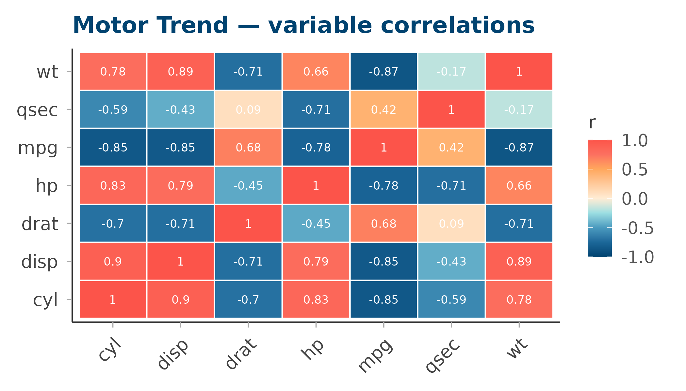
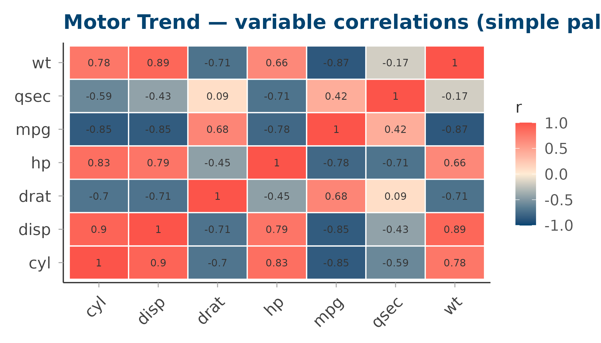
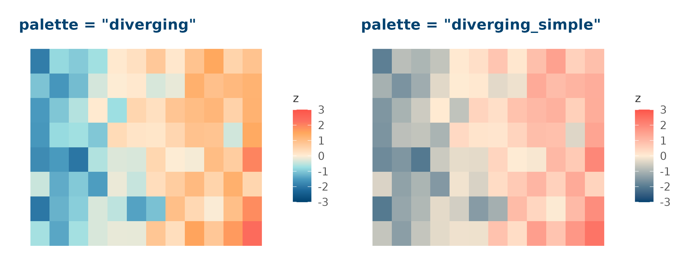

Diverging palettes are designed for continuous data with a meaningful midpoint — typically zero, or a reference value such as a group mean. The colour transitions outward from a neutral centre in two directions, making positive and negative departures immediately distinguishable.
circadia provides two diverging palettes:
| Palette | Hue strategy | Best for |
|---|---|---|
diverging |
Multi-hue — blue → teal → antique white → amber → coral | Figures where maximum contrast across the full range matters |
diverging_simple |
Single-axis interpolation — deep blue → antique white → coral | Smaller figures, print, or when chromatic noise should be minimised |
diverging — complex
Nine stops, multi-hue. High perceptual contrast across the full range.
#014370
#1B6799
#4A9BBF
#9BDFE2
#FFECD4
#FFC99A
#FFA75D
#FC7060
#FC544A
# Correlation matrix
vars <- c("mpg", "cyl", "disp", "hp", "drat", "wt", "qsec")
cor_mat <- cor(mtcars[, vars])
cor_df <- data.frame(
Var1 = rep(vars, each = length(vars)),
Var2 = rep(vars, times = length(vars)),
value = as.vector(cor_mat)
)
ggplot(cor_df, aes(Var1, Var2, fill = value)) +
geom_tile(colour = "white", linewidth = 0.5) +
geom_text(aes(label = round(value, 2)), size = 3, colour = "white") +
scale_fill_circadia_c("diverging", limits = c(-1, 1)) +
labs(title = "Motor Trend — variable correlations",
fill = "r", x = NULL, y = NULL) +
theme_circadia(grid = "none") +
theme(axis.text.x = element_text(angle = 45, hjust = 1))
diverging_simple — simple
Seven stops, direct blue → antique white → coral interpolation. Lower chromatic complexity — cleaner on small multiples or in print.
#014370
#567B91
#AAB4B3
#FFECD4
#FEB9A6
#FD8778
#FC544A
ggplot(cor_df, aes(Var1, Var2, fill = value)) +
geom_tile(colour = "white", linewidth = 0.5) +
geom_text(aes(label = round(value, 2)), size = 3, colour = "#333333") +
scale_fill_circadia_c("diverging_simple", limits = c(-1, 1)) +
labs(title = "Motor Trend — variable correlations (simple palette)",
fill = "r", x = NULL, y = NULL) +
theme_circadia(grid = "none") +
theme(axis.text.x = element_text(angle = 45, hjust = 1))
Side-by-side comparison
library(patchwork)
# Standardised sleep-like data: z-scores across a small grid
set.seed(42)
grid_df <- expand.grid(x = 1:12, y = 1:8)
grid_df$z <- as.vector(scale(rnorm(96, mean = grid_df$x - 6, sd = 2)))
make_tile <- function(pal) {
ggplot(grid_df, aes(x, y, fill = z)) +
geom_tile() +
scale_fill_circadia_c(pal, limits = c(-3, 3)) +
labs(title = paste0('palette = "', pal, '"'), x = NULL, y = NULL, fill = "z") +
theme_circadia(grid = "none") +
theme(axis.text = element_blank(), axis.ticks = element_blank())
}
make_tile("diverging") | make_tile("diverging_simple")
Controlling limits and midpoints
Use the limits argument (passed to
scale_fill_gradientn()) to pin the palette midpoint to a
specific value:
# Centre the palette at 0 with symmetric limits
scale_fill_circadia_c("diverging", limits = c(-1, 1))
# Asymmetric data — still centre at 0
scale_fill_circadia_c("diverging", limits = c(-3, 3))